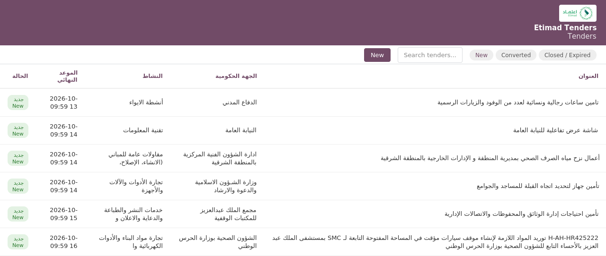

Etimad Tenders
Sync Saudi government tenders from the Etimad platform (tenders.etimad.sa) straight into Odoo, and convert any tender into a CRM opportunity in one click.

What it does
- Pulls open tenders from
tenders.etimad.sa via its visitor-facing endpoint, with pagination
- Stores reference number, agency, branch, activity/sector, submission & envelope dates
- One-click Convert to Opportunity into a CRM lead, pre-filled
- Manual Fetch Tenders Now wizard, filterable by activity
- Daily scheduled sync (installed inactive by default)
- Direct link back to the tender's page on Etimad
- Activity/sector master data, built automatically as tenders sync
- Dedicated User/Manager security groups
Good to know
The Etimad platform sits behind bot-protection (F5 TrafficShield) that occasionally challenges requests
with a CAPTCHA depending on the connecting network. The module does a "warm-up" request to pick up
session cookies automatically, and Settings also accepts a manually-supplied session cookie
(e.g. copied from a browser that already solved the challenge once) as a fallback.
Configuration
- Custom API endpoint override
- Warm-up URL (bot-protection cookie pickup)
- Session cookie (optional, manual fallback)
- Page size / pages per sync
- Restrict sync to specific activities
- Built-in "Test Connection" check
Contact & Support